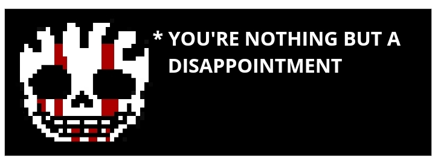

Go Back
Undertale :
Last Corridor
Insanity
Sans
Information
* You Check,
Insanity
Sans
ATK ??? DEF 30
* Looks Like He Gotten Stronger
* Carefull Partner, He Is Dangerous
Data
Undertale :
Insanity
Sans, A Psychopath Who Loves Taunting His Victims
Karmic Retribution : No
Stamina : 215
Stamina Gain Rate: 10% Less Than Usual Insanity
Theme
Lore
Insanity
Sans Was Wondering Through Snowdin, When Suddenly He Found A Grey Door
Thinking That He Found Some Victims Hiding, He Decided Enter And Suddenly. . .
Passive
Excitement - Gains Stamina After Every Kill
Determination Bar
Works Exactly Like Stamina But Instead It Drains In Time.
You Cannot Gain Back Your DT but Instead you can reduce the Amount loss per second By Attacking
You Lose 2% Per 1s, If you Hit A Chara It Will Reduce To 0.5% Per 1s For 1s Duration (Stacks caps at 10s)
Getting Hit While Moving Would Do 5% Damage To The Bar, Standing Still Would Do 15% Damage To Bar
Available Attacks
1st Move
( Barrage )
( Stamina cost : 1 Per 0.2s )
( CD : 10s )
2nd move
( HeadOn Charge )
( 6 stamina cost )
( CD : 8s )
3rd Move
( Insane Blaster )
( 15 stamina cost )
( CD : 12s )
Insanity Charges Up For 0.5s And Sends A Flurry Of Punches Infront Of Him For 3s, If anyone is hit they would be slowed for the duration they are hit.
{ Damage : 2hp/stamina Per 0.1s }
{ Unique : You Can Hold The Ability Down For A Longer Duration ( Caps At 5s ) }
Insanity Charges Up For 1.5s, After That Insanity Charges Forward. If Any Enemy Is In The Way, They Would Be Knocked To The Side ( Insanity Will Gain An Iframe During The Move Duration)
( Damage : 10Hp / 5 Stamina )
( Unique : getting Hit Would Blur The Screen Of Enemies, Has A 35% Chance Of Knocking Charas Weapon Away )
Summons 1 Massive Blaster On Top Of Insanity That Shoots At The Mouse Cursor, Charges up for 2.5s
( Damage : 16Hp / 8 Stam )
( Unique : While Charging Up, You Can Aim The Blaster with your mouse cursor )
4th Move
( Bone Jab )
( 8 Stamina Cost )
( CD : 8s )
5th Move
( Blaster Pin )
( 10 Stamina Cost )
( CD : 18s )
6th Move
( Blink Counter )
( Stamina Usage - Misses : 15 Stam | Lands: 5 Stam )
( CD : 16s )
Insanity Charges up for 0.5s And Jabs Anyone Infront Of him
( Damage : 7Hp / 4 Stamina )
( Unique : Stab deals bleed damage for 3s ( -2 Hp per 1s ) )
Insanity Summon A Blaster That Charges foward. if anyone is hit They Would Be Pinned for 2s
( Damage : NONE )
( Unique : After Pinning the enemy, The Blaster Would Proceed to charge up for 1s Before shooting where they Pinned The Enemy )
Insanity Would Glow Red For 2.5s, During this if he is hit He would Blink Behind Whoever Attacked Him And Leave An AfterImage Behind
( Damage : None )
( Unique : Landing This Move Gives Insanity A 2x Increase In Attack Speed ChargeUps )
7th Move
( None )
(- stamina cost)
(CD : -s)
8th Move
( None )
(- stamina cost)
(CD : -s)
9th Move
( None )
(- stamina cost)
(CD : -s)
[ NONE ]
[ NONE ]
[ NONE ]
Special Interaction
If
Dust
Stamina Or HP Is Low
If
Dust
Dies On 2nd Phase
↓

Short Cutscene ( Death )
Requirement : Runs Out DT Bar And Get Hit
Go Back